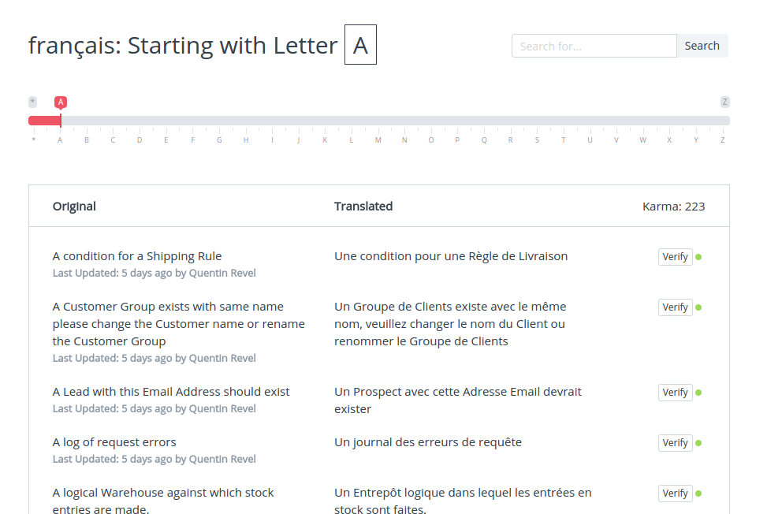
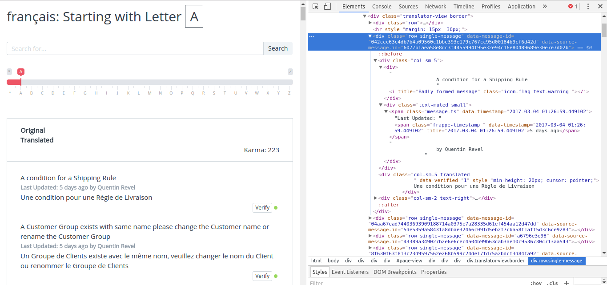

Ces dernières semaines, j'ai participé à l'amélioration des traductions françaises d'ERPNext avec d'autres membres de la communauté.
Malgré le gros travail déjà effectué - plus de 4000 phrases ont été déjà validées sur un total de 7000 - il y a encore une grosse marge d'amélioration.
Avec Quentin Revel, nous avons décidé de joindre nos efforts et de travailler en collaboration afin de diminuer la charge de travail pour chacun et d'ajouter une pré-vérification du travail de l'autre pour garantir la qualité des traductions avant de les ajouter sur le portail de traductions.
La manière la plus simple était du coup de créer un répertoire sur Github, de récupérer les données du portail de traductions, de les retravailler et de tout envoyer sur Github pour revue avant validation.
Le seul problème était de trouver un moyen d'extraire ces données facilement et au bon format...
La Structure du Site Internet
Avant de s'attaquer à la création d'un script, nous devons comprendre la structure d'une page web et de celle-ci en particulier.
Voilà une capture d'écran du portail créé par Frappe, l'équipe derrière ERPNext, pour faciliter la collaboration de la communauté. Pour être honnête, c'est vraiment un superbe outil pour permettre aux personnes sans connaissances techniques de contribuer à un projet open-source.

Maintenant, en appuyant sur CTRL+SHIFT+I dans Chrome, regardons comment son code HTML est structuré.

Comme nous pouvons le voir, chaque phrase est contenue dans une balise "div" ayant la classe "single-message".
A l'intérieur de ce bloc, on trouve deux balises "div" séparées pour les phrases anglaises et les phrases traduites. Seule la traduction est reconnaissable grâce à une classe séparée nommée "translated".
On peut donc imaginer extraire les données en deux étapes: d'abord collecter tous les "div" contenant la classe "single-message" pour obtenir la liste de toutes les traductions, et ensuite diviser chaque object de cette liste en une colonne anglaise et une colonne française.
Nous avons juste besoin d'extraire les phrases anglaises et françaises, par le nom du traducteur, la date ou le statut de vérification, mais ça aurait été possible également.
L'Ecriture un Petit Script d'Extraction de Données
Je recommande d'utiliser Jupyter Notebook pour ce type d'exercice, car c'est facile à utiliser et très rapide à mettre en place.
import requests
import pandas as pd
from bs4 import BeautifulSoup
english = []
french = []
url = "https://translate.erpnext.com/view?lang=fr&c=A"
response = requests.get(url)
soup = BeautifulSoup(response.text, 'lxml')
rows = soup.find_all('div',attrs={"class" : "single-message"})
for row in rows:
nonTranslated_row = row.find('i').previousSibling
english.append(nonTranslated_row.string.strip())
translated_row = row.find('div',attrs={"class" : "translated"})
french.append(translated_row.string.strip())
df = pd.DataFrame(data = {"English": english, "Français": french})
df.head(10)
df.to_csv("letter-a.csv", encoding="utf-8")
Comme vous pouvez le voir, nous utilisons la librairie Pandas habituelle pour formater nos données et également une autre libraire qui s'appelle BeautifulSoup. C'est l'outil qui va nous permettre d'extraire les données du site web.
Les étapes d'éxécution du script sont relativement simples:
- Il crée une matrice pour sauvegarder nos phrases anglaises et françaises.
- Il va à l'URL spécifiée, lit les données et les extrait.
- Il trouve tous les "div" ayant la classe "single-message".
- Pour chaque objet trouvé plus haut, il cherche le mot anglais et le mot français.
- Il formate les données en deux colonnes.
- Il exporte un fichier .csv pour que nous puissions l'éditer dans LibreOffice et travailler dessus plus efficacement.
La seule petite astuce ici est la logique utilisée pour récupérer le mot anglais.
Pour le mot français, c'est relativement facile puisque nous avons une classe spécifique sur la balise "tag", mais pour le mot anglais il n'y a aucun élément différenciateur des autres "div" dans la page.
Mais puisqu'il y a une balise "i" juste en dessous du mot anglais et que c'est la seule balise "i" dans l'objet, nous pouvons dire au script de sélectionner l'élément juste avant lui-même.
Exécutez juste la cellule de votre Jupyter Notebook et le fichier .csv sera exporté dans le dossier de votre script.
Vous pouvez faire la même opération pour chaque lettre sur le portail en changeant l'URL et le nom du fichier d'export en fonction de vos besoins.
Vous avez besoin d'une analyse pour un projet ou de conseils sur ce sujet ? N'hésitez pas à me contacter chez DOKOS, je serai ravi de vous aider!